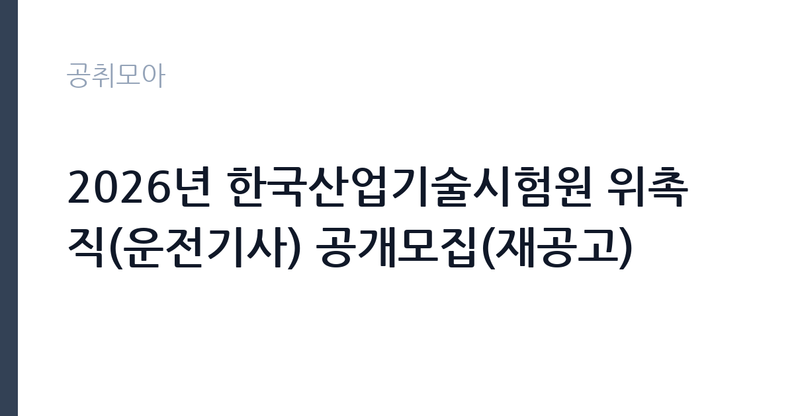

[공공기관] 2026년 한국산업기술시험원 위촉직(운전기사) 공개모집(재공고)
한국산업기술시험원 · 경남 · 마감 2026-10-06 (D-13) · 출처 잡알리오

한눈에 보는 모집 조건
| 기관 | 한국산업기술시험원 |
|---|---|
| 공고명 | 2026년 한국산업기술시험원 위촉직(운전기사) 공개모집(재공고) |
| 고용형태 | 기간제 |
| 근무지 | 경남 |
| 게시일 | 2026-09-23 |
| 마감일 | 2026-10-06 (D-13) |
지원자격, 이렇게 읽으세요
- 공공기관 채용공시
- 세부 조건은 원문 공고문 확인
대한민국 국적을 가진 분으로 국가공무원법과 기관 인사규정의 채용결격사유에 해당하지 않아야 하며 해외여행에 결격사유가 없고 채용예정일에 정상 출근이 가능해야 합니다. 연령은 채용예정일 기준 만 55세 이상 만 68세 미만으로 제한되며 1종 보통 이상 운전면허를 소지해야 합니다. 세부 자격과 제출서류는 원문에서 확인하시기 바랍니다.
이 공고의 포인트
이 공고의 특징은 명확한 연령대 타기팅입니다. 만 55세 이상 68세 미만으로 신중년과 고령층의 공공기관 일자리를 찾는 분께 열린 자리입니다. 운전기사 직무라 특수한 스펙보다 안전운전 경력과 성실성이 평가의 중심이 됩니다. 재공고라는 점은 경쟁률이 앞선 모집보다 낮을 수 있다는 신호로 읽을 수 있습니다.
전형은 어떻게 진행되나
마감일은 2026년 10월 6일이며 서류심사와 면접심사를 거쳐 선발하는 구조로 예상됩니다. 운전 적성이나 실기 확인이 포함될 수 있으니 세부 전형은 원문 공고문에서 확인하시기 바랍니다. 접수처는 기관 채용사이트이며 마감시각을 미리 확인하고 접수하시기 바랍니다.
원문에서 확인한 전형 방식
ㅇ 대한민국 국적을 가진 자 ㅇ 「국가공무원법」 제33조(결격사유) 및 인사규정 제7조(채용결격사유)에 해당되지 않는 자 - 상기 두 조항 각호의 내용이 상충될 경우 국가공무원법 제33조의 규정을 적용 ㅇ 해외여행에 결격사유가 없는 자 ㅇ 채용예정일에 정상 출근이 가능한 자 ㅇ (연령) 채용예정일 기준 만 55세 이상 만 68세 미만 ㅇ 운전면허 소지자(1종 보통 이상)
이런 분께 추천해요
- 1종 보통 이상 면허를 보유한 만 55세 이상 68세 미만 구직자께 적합합니다.
- 안전운전 경력이 풍부하고 공공기관에서 안정적으로 일하고 싶은 분께 추천합니다.
- 경남 근무가 가능하며 성실한 근무 태도를 갖춘 분께 어울립니다.
지원 전 체크리스트
- 연령 요건인 만 55세 이상 68세 미만에 해당하는지 확인했습니다.
- 1종 보통 이상 운전면허 유효 여부를 확인했습니다.
- 결격사유와 제출서류 목록을 원문에서 확인했습니다.
- 마감일과 접수 방법을 원문에서 확인했습니다.
모집 일정과 제출 타이밍
마감일은 10월 6일로 접수기간이 약 2주입니다. 운전경력증명서와 무사고 증빙 등 발급에 시간이 걸리는 서류가 있으므로 접수 첫 주에 준비를 마치시는 것을 권합니다. 재공고 특성상 조기 마감 가능성을 염두에 두고 서두르시기 바랍니다.
직무 이해하기: 공공기관
위촉직 운전기사는 기관 임직원과 시험 장비, 공문서 등의 이동을 지원하는 업무를 맡습니다. 한국산업기술시험원은 시험인증 서비스를 제공하는 공공기관으로 전국 사업장을 두고 있어 장거리 운행과 일정 관리가 중요합니다. 차량 점검과 안전운전이 일상의 핵심이며 기관의 얼굴로서의 친절한 응대도 요구됩니다.
자기소개서 작성 팁
자기소개서에서는 무사고 운전 경력과 연간 주행거리, 다룬 차종을 구체적으로 쓰시기 바랍니다. 장거리와 야간 운행 경험, 차량 고장 대응 사례가 좋은 소재가 됩니다. 공공기관 직원으로서의 보안 의식과 친절한 태도를 함께 보여주시면 좋은 평가를 받을 수 있습니다.
면접 준비 포인트
면접에서는 안전운전 철학과 돌발상황 대응 경험을 질문받을 가능성이 큽니다. 빙판길과 폭우, 차량 이상 징후 대응 경험을 사례로 준비하시기 바랍니다. 건강 상태와 야간, 휴일 운행 가능 여부도 자주 묻는 항목이니 본인의 계획을 정리해 두시기 바랍니다.
급여·근무조건 읽는 법
위촉직 보수의 구체 금액은 공고문에 따른 것으로 원문 채용사이트에서 확인하시기 바랍니다. 공공기관 위촉직은 월급제 또는 연봉제로 운영되며 4대보험과 퇴직금이 적용되는 경우가 일반적이나 기관별 차이가 있으니 근로조건을 반드시 확인하시기 바랍니다. 실수령액은 기본급과 각종 수당에 따라 달라집니다.
자주 묻는 질문
- 연령 제한이 정확히 어떻게 되나요?
채용예정일 기준 만 55세 이상 만 68세 미만입니다. 기준일이 채용예정일이므로 본인 생년월일을 대조해 원문에서 확인하시기 바랍니다. - 어떤 면허가 필요한가요?
1종 보통 이상 운전면허 소지가 필수입니다. 면허 유효기간과 정지 이력 여부를 미리 점검하시기 바랍니다. - 재공고라는 것은 무슨 의미인가요?
앞선 모집에서 채용 예정 인원을 채우지 못해 다시 모집하는 것입니다. 조건이 완화된 경우도 있으니 변경 사항을 원문에서 확인하시기 바랍니다.
함께 보면 좋은 공고
[공공기관] 발전공기업 통합실무지원단장 채용공고 — 마감 2026-10-08[공공기관] (재)인천광역시부평구문화재단 대표이사 채용 공고 — 마감 2026-10-13[공공기관] [설악산] 설악산국립공원 기간제 직원[환경관리(한시인력)] 채용 공고 — 마감 2026-10-01출처: 잡알리오 공개정보를 바탕으로 공취모아가 정리한 안내글입니다. 모집 조건·일정은 변경될 수 있으니 지원 전 반드시 원문 공고문을 확인하세요. 본 글은 정보 제공용이며 합격을 보장하지 않습니다.